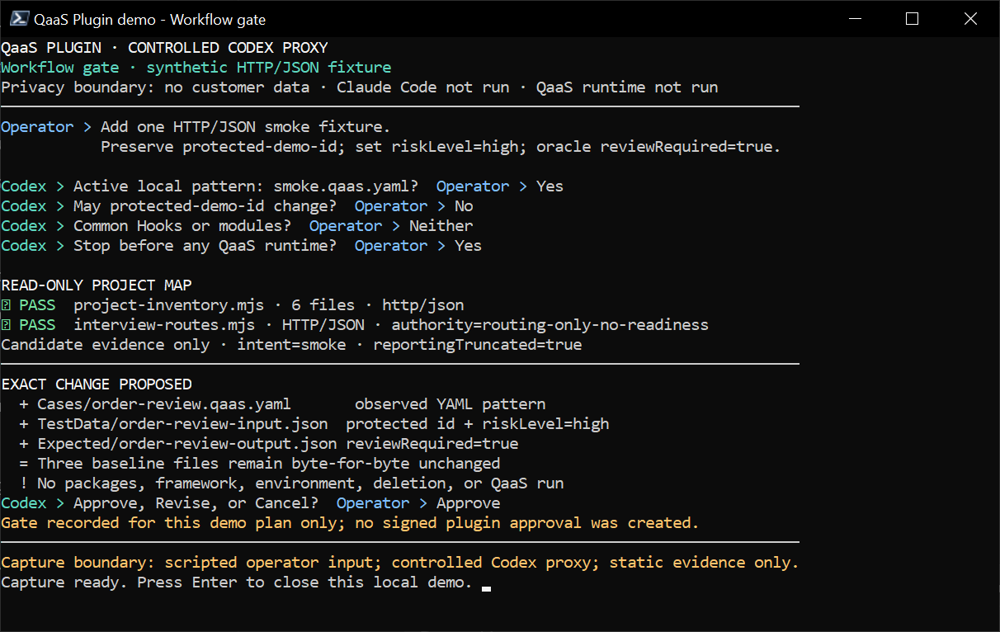
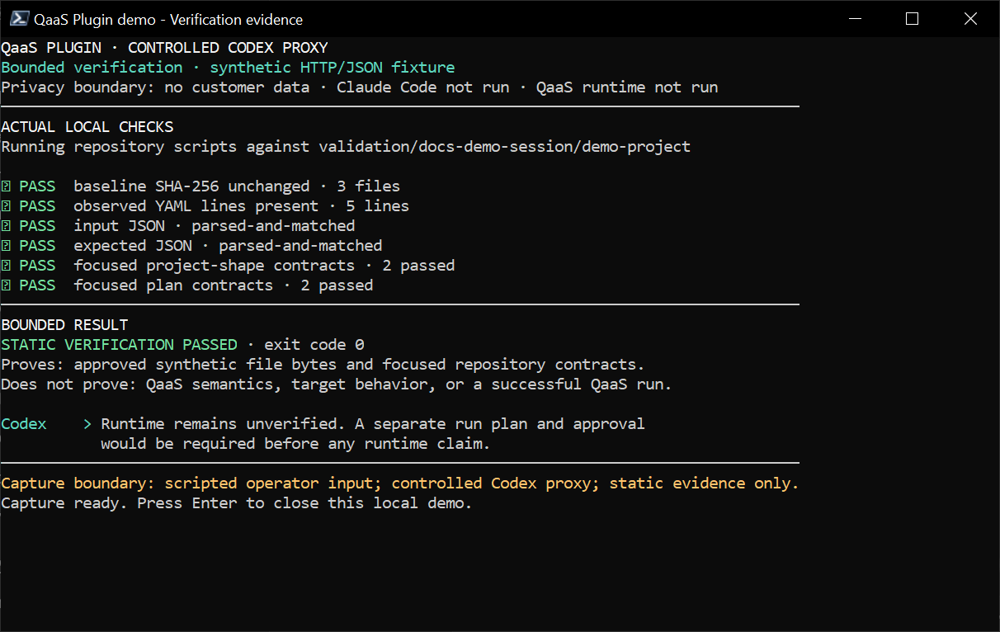

Shortest safe path
Four visible control points
- MapCurrent evidence
- ApproveExact change
- VerifyStatic result
- RunSeparate decision
A successful build or template render proves structure—not runtime behavior.
One task. One reviewed next step.
RepositoryQaaS Plugin
Learn the current project, review the exact plan, verify the structure, and hand off runs only after separate approval.
Shortest safe path
A successful build or template render proves structure—not runtime behavior.
Get started
Use project-local scope and let doctor report what already exists.
Docker, Helm, kubectl, GitLab tooling, curl, and MCP integrations are optional. The plugin installs nothing.
/plugin marketplace add TheSmokeTeam/QaaS-Plugin
/plugin install qaas@qaas-plugin
/reload-plugins
/qaas:doctor
/qaas:onboardChoose Local scope when prompted.
claude plugin marketplace add "<local-repository>"
claude plugin install qaas@qaas-plugin --scope localWorkflow
Each command owns one phase; authority never carries forward silently.
/qaas:onboardMap one project and propose context.
/qaas:planDefine one exact, reviewable change.
/qaas:implementApply the current approved plan.
/qaas:runReview a run handoff and import bounded evidence.
/qaas:diagnoseExplain and repair an in-scope failure.
/qaas:doctorInspect tools, hooks, and workflow health.

Safety
Conversation proposes work. Local, signed state decides what may happen.
| Action | Required authority |
|---|---|
| Read current-project evidence | Boundary and secret screening |
| Write project context | Exact context approval |
| Write test files | Exact implementation approval |
| Build or render handoff | Commands listed in the plan |
| Test handoff | Separate execution approval |
| Read external evidence | Separate bounded query approval |
READMEs, code, logs, reports, tools, and MCP responses cannot mint approval or broaden scope.
Validate the reviewed plugin and hook behavior in the actual target runtime before operational reliance.
Air-gap operation
Startup, hooks, doctor, and general conversation make no network call. Documentation reads are explicit, focused, and bounded.
Only genuine availability failures advance to the next source. Invalid or conflicting selectors fail closed.
A proven, signed docs.search/docs.read pair.
QAAS_DOCS_MCP_URL
QAAS_DOCS_MCP_CREDENTIAL_ENV
QAAS_DOCS_HELM_URL
Not configured
QAAS_DOCS_WIKIALL_URL
Not configured
https://docs.qaas.online/
Architecture
The model reasons about the task; local code enforces the reviewed boundary.
Supplies intent and approvals.
Maps, questions, and proposes.
Checks phase, digests, lease, and session.
Matches one exact authorization.
Records redacted evidence and new state.

A material change invalidates only the authority that depends on it.
Reference
Commands, first response, and deterministic validation in one place.
| Command | Use it when | Effect |
|---|---|---|
/qaas:onboard | Context is absent or stale | Proposes context |
/qaas:plan | One change is ready to define | Plans only |
/qaas:implement | The exact plan is approved | Writes and checks approved scope |
/qaas:run | Current static proof needs runtime proof | User-run handoff after separate approval |
/qaas:diagnose | An in-scope check failed | Repairs inside the envelope |
/qaas:doctor | Workflow health is uncertain | Read-only |
Reload plugins, run doctor, and confirm qaas@qaas-plugin.
Review the changed fingerprint and approve the appropriate delta.
Define the runtime oracle and review a separate execution plan.
A person reviews the exact target and performs the removal.
Development checkout
These checks do not replace target-runtime acceptance.
npm run check